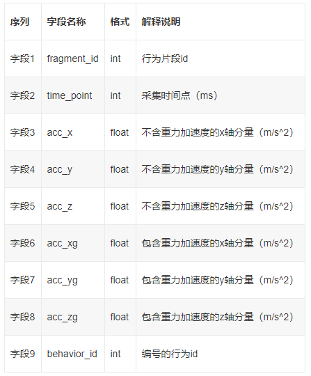

2020年“创青春·交子杯”新网银行金融科技挑战赛-AI算法赛道，旨在鼓励选手运用前沿的人工智能技术解决金融科技等领域中的实际问题，激发选手创新能力，增强其动手能力。比赛挑战题目为“看见你的呼吸”，该项技术可应用于金融在线业务的生物识别、智能家居感应、智慧健康监控管理、健身训练助手等多个领域，期待挑战者利用机器学习和人工智能的最新成果，根据手机传感器的时间序列数据，设计出区分能力强、稳定性高的行为识别模型。官网链接
题目描述
本次行为预测任务，参赛者需要利用从手机传感器采集的时间序列数据，建立模型识别对应时间段手机使用者的行为。该算法可应用于生活场景中走路、玩游戏等日常行为的识别，也可以应用于金融领域的客户异常行为实时识别，尤其是在在线信贷产品的申请、提现等关键服务环节。此类技术能进一步提升在电信诈骗、中介骗贷等金融场景中的欺诈风险识别和防范能力。
数据总体概述
新网银行提供的手机行为数据集由多个采集对象使用安卓手机采集而成。样本采集对象包含多名男性和女性，年龄跨度在20-55岁，采集时要求采集对象在指定时间内按照其使用习惯完成指定动作。采集场景分为3类：行走、站立、坐卧；3个场景中各采集了：玩游戏、刷抖音或快手等短视频、看影视剧或综艺节目等长视频、网页浏览、编辑文字、其他动作（如拍照、语音通话、视频通话、发语音、图片PS）6类动作；此外，还单独设计了“递手机”的行为，此行为不区分场景。我们将“行为”定义为动作+场景的组合，因此共19种不同行为；训练集中已将行为预处理为0-18的编号（behavior_id）。数据集中每个行为片段（fragment_id）对应为5s的加速计读数：包含重力加速度(acc_xg, acc_yg, acc_zg)和不含重力加速度(acc_x, acc_y, acc_z)；数据集每行对应fragment_id下某个时间点的加速计数据。数据分为训练集和测试集，分别用于训练模型和测试模型效果。
数据说明
训练集
sensor_train.zip 中包含一个文件sensor_train.csv，共425360行（含表头），表头信息说明如下

训练集中，不同fragment_id对应不同的行为片段，共计7292组行为（编号0-7291），behavior_id共计19个不同的数值（0-18）分别对应了19种不同的行为。
测试集
sensor_test.zip 中包含一个文件sensor_test.csv，共430183行（含表头），表头信息说明如下

测试集中，不同fragment_id对应不同的行为片段，共计7500组行为（编号0-7499）。
备注：选手需自行处理数据缺失、异常和少量的质量问题。
本次比赛数据由四川新网银行提供，仅可用于本次比赛，不得用于任何商业用途。
结果文件要求
请提交带有表头的「csv」文件，自由命名为「*.csv」形式。表头字段分别为「fragment_id, behavior_id」，中间由逗号分割(逗号为英文字符)。示例如下：

备注：数据集中包含一个「提交结果示例.csv」的提交样例文件，输出值为随机结果，供参赛人员参考。表头的字段名称必须是「fragment_id, behavior_id」，且第一列与第二列顺序不能交换，每个fragment_id不重复。
初赛数据集
评估指标
评测方法：根据行为（场景+动作）的设定，本次比赛修订常用的acc指标如下：
其中，选手在某个测试样本的得分计算规则对应关系如下：
- 如果是递手机这个行为，预测正确得1分，预测错误得0分；
- 如果不是递手机这个行为，那么：
- 场景+动作完全预测正确，得1分
- 只正确预测了场景，得1/7 分
- 只正确预测了动作，得1/3分
- 场景+动作全部不正确，得0分。
我们已经将行为预处理成0-18的行为id编号，选手在训练模型时可使用此评分方式，参考下面的Python代码（其中变量mapping存储了behavior_id与行为编码的对应关系）。
def acc_combo(y, y_pred):
# 数值ID与行为编码的对应关系
mapping = {0: 'A_0', 1: 'A_1', 2: 'A_2', 3: 'A_3',
4: 'D_4', 5: 'A_5', 6: 'B_1',7: 'B_5',
8: 'B_2', 9: 'B_3', 10: 'B_0', 11: 'A_6',
12: 'C_1', 13: 'C_3', 14: 'C_0', 15: 'B_6',
16: 'C_2', 17: 'C_5', 18: 'C_6'}
# 将行为ID转为编码
code_y, code_y_pred = mapping[y], mapping[y_pred]
if code_y == code_y_pred: #编码完全相同得分1.0
return 1.0
elif code_y.split("_")[0] == code_y_pred.split("_")[0]: #编码仅字母部分相同得分1.0/7
return 1.0/7
elif code_y.split("_")[1] == code_y_pred.split("_")[1]: #编码仅数字部分相同得分1.0/3
return 1.0/3
else:
return 0.0